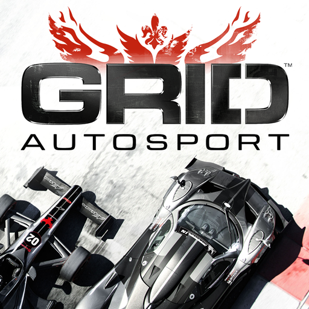

GRID Autosport

GRID Autosport merupakan game racing atau balap rilisan tahun 2014 yang mendapatkan versi Android-nya pada tahun 2019. Yang menarik, kualitas keseluruhan dari game ini bisa disebut setara dengan versi PC atau konsolnya.
Mulai dari visual, kontrol, dukungan kontroler, koleksi mobil, keragaman mode balapan hingga kepadatan konten, GRID Autosport memiliki semuanya. Tak heran, game dari seri GRID ini bertipe premium tanpa iklan dan pembayaran di dalam game.